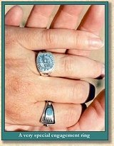
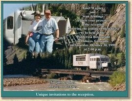

A Wild Goose Chase
Photos and Narrative by Stan Jennings
|
What does a person do when he goes on a wild goose chase and actually catches one?
Janet Wagner has been the Business Manager for the Galloping Goose Historical Society of Dolores, Inc. in Dolores, Colorado for about seven years. She is one of the two people primarily responsible for the restoration of Rio Grande Southern Motor Number 5 (more popularly know as Galloping Goose Number 5). She didn't do much of the physical work, but she was instrumental in procuring grants and donations that made the whole eighteen-month restoration project and actual operation possible. When Galloping Goose Number 5 actually operated on the Cumbres & Toltec Scenic Railroad in June of 1998 and May/June of 1999 and on the Durango & Silverton Scenic Railroad in September 1998 and August 1999 she was responsible for the volunteer crew, souvenirs and the overall operation of the Goose. Her activities with the society have earned her the name ''Mother Goose''. |
| Stan Jennings is active in the Salt Lake City, Utah area in both prototype and model railroad activities. He has been secretary/treasurer and assistant superintendent of the Wasatch Division of the Rocky Mountain Region of the National Model Railroad Association and is currently Superintendent. He has been newsletter editor for the Promontory Chapter of the National Railway Historical Society and is currently historian. From 1975 until 1981 Stan worked part time on the Heber Creeper tourist railroad, primarily as a steam locomotive fireman. He enjoys riding and photographing trains of all types as much as his schedule allows. |
| In June 1998 Stan was riding and photographing Galloping Goose Number 5 on the Cumbres & Toltec Scenic Railroad where he met Janet Wagner and talked with her a couple of times. |
| In December 1998 Stan's wife of almost 31 years passed away. |
| Stan had purchased tickets for two trips on the Galloping Goose from Chama to Cumbres and return for May 31, 1999. Almost as an afterthought he remembered Janet from the previous year and that she had made a comment that could imply she was not married. Stan made the effort to get acquainted with Janet on those rides, found she is a widow and asked her out to dinner that evening. They found they have a lot in common and think a lot alike. Their relationship grew over the summer, to their common happiness. |
| So what does a person do when he goes on a wild goose chase and actually catches one? Marry her, of course! On August 25, 1999 she received a very special engagement ring from Stan that symbolizes their meeting on Galloping Goose Number 5 and Janet's association with Galloping Goose Number 5. The wedding is set for October 30, 1999, on Rio Grande Southern Motor Number 5 at the depot in Dolores, Colorado with a reception following at the Ponderosa Restaurant in Dolores at 2 PM. |
| A Salt Lake City area reception will be held Saturday November 6, 1999, in conjunction with the traditional Saturday evening after-the-show get-together at Wasatch Rails '99. |
|
 |
 |


|
The Narrow Gauge Circle is written, maintained,and hosted by: Mark L. Evans Send Comments to:Mark L. Evans All original materials, text, and digital images Copyright © 1995-2014 Mark L. Evans. All rights reserved. Imitation is said to be the "sincerest" form of flattery.....Please don't flatter us without permission. |